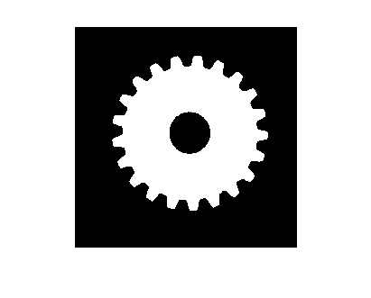
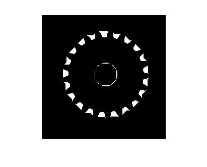
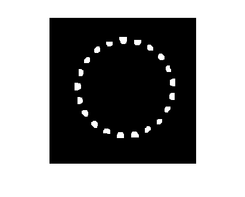

Contar el número de dientes de un engranaje
Contents
Cargamos la imagen y la convertimos a escala de gris
img=imread('176.jpg');
img=rgb2gray(img);
Seleccionamos un umbral y binarizamos la imagen
imhist(img)
% Se invierte el resultado para que el objeto quede blanco
img2=~im2bw(img,100/255);
imshow(img2);

Aplicamos una operación de cierre
% El objetivo es eliminar los huecos entre los dientes img3=imclose(img2,strel('disk',20)); imshow(img3);
Calculamos la diferencia
% Al restar la imagen obtenida tras la operación de cierre de la imagen % binarizada inicial, nos quedamos con una imagen de los "huecos" entre los % dientes. img4=imsubtract(img3,img2); imshow(img4);

Aplicamos una operación de apertura
% El objetivo es eliminar los pequeños objetos que aparecen en la zona % del eje del engranaje img4=imopen(img4,strel('disk',3)); imshow(img4)

Etiquetamos los objetos encontrados
[imgL,numobj]=bwlabel(img4,8);
disp(sprintf('Hay %d dientes', numobj))
Hay 21 dientes